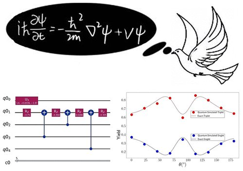

Quantum Simulation of the Radical Pair Dynamics of the Avian Compass

The simulation of open quantum dynamics on quantum circuits has attracted wide interests recently with a variety of quantum algorithms developed and demonstrated. Among these, one particular design of a unitary dilation-based quantum algorithm is capable of simulating general and complex physical systems. We apply our developed quantum algorithm to simulating the dynamics of the radical pair mechanism in the avian compass. This application is demonstrated on the IBM QASM quantum simulator. This work is the first application of any quantum algorithm to simulating the radical pair mechanism in the avian compass, which not only demonstrates the generality of the quantum algorithm but also opens new opportunities for studying the avian compass with quantum computing devices
References
Quantum Simulation of the Radical Pair Dynamics of the Avian Compass
Yiten Zhang, Zixuan Hu, Yuchen Wang and Sabre Kais
J. Phys. Chem. Lett. 2023, 14, 832−837 DOI: 10.1021/acs.jpclett.2c03617
Link to PDF
The Radical Pair Mechanism and the Avian Chemical Compass: Quantum Coherence and Entanglement
Zhang, Yiteng.; Berman, Gennady, P; Kais, Sabre; et al
International Journal of Quantum Chemistry, 115, 15 (2015)
Link to article
Sensitivity and Entanglement in the Avian Chemical CompassZhang, Yiteng; Berman, Gennady P.; Kais, SabrePhysical Review E, 90, 4, 042707 (2014)Link to article
Quantum coherence and entanglement in the avian compassJames Pauls, Yiteng Zhang, Gennady Berman, Sabre KaisPhysical Revew E, 87, 062704 (2013)Link to PDF